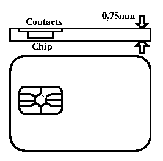

Aims and Goals | Organization
| Submissions | Proceedings
| Important Dates | Themes
| Venue and Travel
| Accepted papers |For
more Information

Smart cards or IC cards offer a huge potential for information processing
purposes. The portability and processing power of IC cards allow for highly
secure conditional access and reliable distributed information systems.
IC cards are already available that can perform highly sophisticated cryptographic
computations. The applicability of IC cards is currently limited
mainly by our imagination; the information processing power that can be
gained by using IC cards remains as yet mostly untapped and is not well
understood. Here lies a vast uncovered research area which we are only
beginning to assess, and which will have great impact on the eventual
success of the technology. The research challenges range from electrical
engineering on the hardware side to tailor-made cryptographic applications
on the software side, and their synergies.
Many currently existing events are mainly devoted to commercial and application aspects of IC cards. In contrast, the CARDIS conferences aim to bring together researchers who are active in all aspects of design of IC cards and related devices and environment, such as to stimulate synergy between different research communities and to offer a platform for presenting the latest research advances.
CARDIS 1994, sponsored by the International Federation for Information Processing (IFIP) and held in November 1994 in Lille, France, successfully brought together representatives from leading IC research centers from all over the world. CARDIS 1996 was the second occasion for the IC card community in this permanent activity. CARDIS 1996 was organized jointly by the Centre for Mathematics and Computer Science at Amsterdam (CWI) and the Department of Computer Systems of the University of Amsterdam (UvA). CARDIS 1998, organized by UCL and held at Louvain-la-Neuve, again gathered participants from all over the world.
IFIP CARDIS 2000 is being organized as an IFIP Working Conference
and will be partially supported by Hewlett-Packard Laboratories (Bristol,
UK).
Program Chair:
Josep Domingo-Ferrer (Univ. Rovira i Virgili, Spain)
Anthony Watson (Edith Cowan Univ., Australia)
Program Committee:
Yves Deswarte (LAAS-CNRS and INRIA, France)
Dieter Gollmann (Microsoft Research, UK)
Louis Guillou (CNET, France)
Pieter Hartel (Southampton, UK and Amsterdam, The Netherlands)
Peter Honeyman (Michigan Univ., USA)
Eduard de Jong (Sun Microsystems, USA)
Mark Looi (Queensland Univ. of Technology, Australia)
Bernd Meyer (Siemens AG Corporate Technology, Germany)
Tatsuaki Okamoto (NTT, Japan)
Pierre Paradinas (Gemplus Research Lab, France)
Holger Petersen (ENTRUST Europe, Switzerland)
Jacques Patarin (BULL CP8, France)
Jean-Jacques Quisquater (Univ. Catholique de Louvain, Belgium)
Josep Rifà-Coma (Univ. Aut. Barcelona, Spain)
Bruno Struif (GMD, Germany)
Antonio Valverde (SERMEPA, Spain)
Michael Waidner (IBM, Switzerland)
Steering Committee Chair:
Vincent Cordonnier (Rd2p, Lille, France)
General Chair:
David Chan (HP Laboratories, Bristol, UK)
All correspondences, including submissions, will be made through
e-mail. The program committee invites both original technical contributions
and high quality surveys. A submission should be clearly marked either
as an original paper or a survey. All submissions will be blind-refereed.
In lodging a submission, please send two separate e-mail messages to
The first message must be in ASCII format. It should include information
on
1. whether the submission is a survey or an original contribution,
2. the title of the submission,
3. the names and affiliations of authors, and
4. the e-mail, telephone and facsimile numbers of the contact author.
The second message should contain the submission itself:
Proceedings will be available at the conference and will be published through Kluwer Academic Publishers, the principal publisher to IFIP. Authors of accepted papers may be expected to sign a copyright release form.
The authors of selected papers may be invited to prepare and submit
a new paper on a specific topic to a special issue of the journal "Computer
Networks" on smart cards.
Technology/hardware
1 IC architecture and techniques
2 Memories and processor design
3 Read/Write unit engineering
4 Specific co-processors for cryptography
5 Biometry
6 Communication technologies
7 Interfaces with the user, the service suppliers
8 Reliability and fault tolerance
9 Special devices
10 StandardsSoftware
11 The operating system, Java...
12 Models of data management
13 Communication protocolsIC Card design
14 Tools for internal or external software production
15 Validation and verification
16 Methodology for application designElectronic commerce
17 Road pricing
18 Electronic payment systems
19 Copyright protectionAlgorithms
20 Formal specification and validation
21 Identification
22 Authentication
23 Cryptographic protocols for IC cards
24 ComplexitySecurity
25 Models and schemes of security
26 Security interfaces
27 Hardware and software implementation
28 Security of information systems including cards
29 Formal verification of transaction sets
30 Protocol verificationIC Cards, individuals and the society
31 IC cards and privacy
32 Owner access of data
33 IC cards: political and economical aspects
34 Is the IC card going to change legislation?
35 Patents, copyrightsFuture of IC cards
36 Innovative technologies
37 Moving towards the pocket intelligence
38 Convergence with portable PCs, laptops etc ...
39 PCMCIAInnovative applications
40 Design methodology of applications
41 IC cards and information systems
42 Examples of new applications
43 Requirements for innovative cardsStandards
44 Emerging standards
45 Compliance and approval
CARDIS 2000 Home Page: http://www.cardis.org